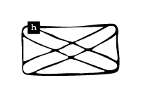

<!DOCTYPE html>
<html lang="kr"></html>
<head>
  <meta charset="UTF-8">
  <meta http-equiv="X-UA-compitable" content="IE-edge">
  <meta name="viewport" content="width=device-width", initial-scale="1.0">
  <title>h</title>
  <link href="h_.css" rel="stylesheet">
  <script type="text/javascript">
    document.oncontextmenu = function(){return false;}
    function redirectToRandomPage() { 
            // Array of specific pages on the website 
            const pages = [ 
                'index2.html', 
                'index9.html', 
                'index16.html', 
                'index23.html'   
            ]; 
            // Generate a random index 
            const randomIndex = Math.floor(Math.random() * pages.length); 
            // Redirect to the randomly selected page 
            window.location.href = pages[randomIndex]; 
    }
  </script>
</head>
<body oncontextmenu="return false" onselectstart="return false" ondragstart="return false" onkeydown="return false">
  <div class="box-container">
      <div class="box-item1">
        <div class="map">
          <a onclick="redirectToRandomPage()">
            
          </a>
          <p>논문 발췌</p>
          <div class="comment">
            <p>해러웨이의 &lt;사이보그 선언문&gt;을 독해하는 데 도움이 되는 논문의 일부를 발췌한 페이지. 다양한 논의를 통해 해러웨이의 세계관을 깊이 이해할 수 있다.</p>
          </div>
      </div>
    </div>
    <div class="box-item2">
      <div class="textbox-center">
        <div class="textbox1">
          <h2>사이보그 영화로 고찰하는 사이보그 여성주체</h2>
        </div>
        <div class="textbox3">
          <p>중앙대학교 첨단영상대학원<br>영상예술학과 영화이론전공<br>심혜경<br>2003년 12월</p>
        </div>
        <br>
        <div class="textbox2">
          <p>사이보그 이미지가 대중에게 알려지도록 기여한 사이보그 영화에서 사이보그가 재현되는 양상은, 블록버스터 영화이거나 그 아류의 B급 영화이거나 관계없이, 텍스트에 등장하는 사이보그 인물은 주로 남성이며 힘과 권력 체계의 대변인 혹은 윤리적 판단자를 자처하면서 살상용 무기로 재현되기가 일수로, 간혹 여성 사이보그가 등장하는 경우에는 서사의 보조적인 역할을 하거나 단순한 스펙터클로 재현되는 것을 알 수 있다.</p>
        </div>
        <div class="textbox2">
          <p>이분법적 사고는 문제적인데, 이유는 그것이 가치들을 위계적으로 배치하며 한 항을 다른 항에 대해서 특권화시키는, 즉 다른 항을 부정하거나 다른 항의 이해를 종속시키는 방식 지배와 종속의 관계를 사용함으로써, 두 항간의 대 립적 관계를 제외하고는 다른 다양하고 복잡한 관계들에 대한 사고의 가능성을 차단해 버리기 때문이다.</p>
        </div>
        <div class="textbox2">
          <p>미셸 푸코가 계보학적으로 연구한 바를 빌어오면 이분법적 사고가 지식의 기반이 되었으며, 그렇게 축적된 편협한 지식은 사회체제와 권력구조를 지탱하며, 또 순환적으로 그 지배적 사회체계를 유지하게 위해서 지식-특히, 과학 기술-이 공모하게 된다.</p>
        </div>
        <div class="textbox2">
          <p>과학 기술과 여성 혹은 과학 기술과 페미니즘간의 관계에 대한 연구들의 활발한 진행과 발맞추어 해러웨이는 문화와 과학과 페미니즘과 사회주의의 교차로에서 20세기 후반 여성 페미니스트 주체의 존재론적 이상을 ‘사이보그’로 사유할 것을 권한다.</p>
        </div>
        <div class="textbox2">
          <p>영화는 남성만의 장자로, 영화가 탄생하고 무려 70년간이나 여성은 남성 시선의 대상으로 스크린 위에 살면서, 남성들이 스크린 뒤에서 자신들의 욕망을 투사하는 동안 그 은막을 찢고 밖으로 나와 자신의 목소리를 들려주지 않았다.</p>
        </div>
        <div class="textbox2">
          <p>페미니즘 이론가들이 대중문화 텍스트에 집중하는 것은 여성들에 대한 재현이 모순과 딜레마로 가득 차 있다고 여기기 때문이며, 또한 그러한 재현물 속에서 이미지화되는 것은 거의가 여성이기 때문이다. 여성성, 여성적 이미지, 여성 신체, 여성적 성욕에 대한 갖가지 담론들은 남성적 시각에서 만들어진 허구이다. 이는 사회적으로 처방된 여성성이 현 사회에서 여성의 역할과 사회적 관계를 구성하고 여성성의 사회적 이상형을 만드는 극약이다. 이미지는 현실의 재현이 아니라 그것이 현실 자체가 되기도 하기 때문에, 이미지를 의심하고 이의를 제기하고 재현체계를 변화시키는 것이 과제이다.</p>
        </div>
        <div class="textbox2">
          <p>해러웨이는 지식 전반에는 과학을 포함하여 합리적이라 오인된 모든 것들은 그 관찰자 혹은 사고자가 무소nowhere에서 대상을 바라보는 순수 목적이 아니라는 것을 논증해왔다. 이렇듯 오인된 지식들은 특정한 위치에서 바라보는 부분적인 시각의 산물이며, 관찰자나 사고자의 욕망이 투영된 제한된 목소리를 내는 ‘상황적 지식 situated knowledge’이라는 것이 그녀의 저작 전반에 깔려 있다.</p>
        </div>
        <div class="textbox2">
          <p>해러웨이가 지적하는 20세기 후반의 가장 큰 특징은 과학 기술의 발달로 인해서 ‘과학=진리=객관’이라 오인되어온 ‘과학적인 문화’가 허물어진다는 것이다. 즉, 과학은 객관적이고 절대적인 진리나 사실이 아니라 단지 하나의 문화일 뿐이며, 이러한 과학 문화가 과학기술의 발달로 인해 흐려지고 있다는 주장이다.</p>
        </div>
        <div class="textbox2">
          <p>또 하나, 사이보그는 기원 신화가 없기 때문에 통합적이고 유기체적일 수밖에 없는 코기토의 주체와는 다르다. 그러므로 사이보그는 통일성과 서구적 의미에서의 자연과의 동일시 단계를 건너뛸 수 있고, 오이디푸스적인 기획이 없는 공동체를 꿈꿀 수 있는 것이다.</p>
        </div>
        <div class="textbox2">
          <p>획일적 체제에 대해 배반을 일삼는 사이보그 정치학은 기술 발전을 두려움 없이 수용하고, 차이를 긍정하며, 획일적인 정체성 대신 연대에 따라 변신을 일삼으며, 거대 이데올로기에 저항하며 균열을 내는 삶의 방식이다.</p>
        </div>
        <div class="textbox2">
          <p>피터 갤리슨 Peter Galison<span title="Peter Galison, “The Onthology of The Enemy: Norbert Weiner and Cybernetics Vision”, Critical Inquiry 21, 1994, pp. 228-266. 홍성욱, 같은 책, p. 307.에서 재인용."><sup>60&#41;</sup></span>같은 과학사학자가 해러웨이적 사이보그 의미에 대하여 지적하는 부분은, 사이보그라는 개념의 근원인 사이버네틱스가 남성적인 전쟁 연구에서 탄생한 것인데 과연 그것이 여성 페미니스트의 존재론이며 인식론이 될 수 있는지에 대한 것이다.</p>
        </div>
        <div class="textbox2">
          <p>또한 사이보그는 동일한 이유로 즉, 인간과는 ‘다른’ 초인이기에, 인간 사회에서 인간과 인간처럼 살아갈 수 없으며, 이것이 그들에게 는 오히려 ‘인간보다 더 인간적인’ 갈등과 정체성으로 고민하게 되는 계기를 제공하게 된다. 이 존재는 사이보그로 탄생 혹은 재탄생되는 순간부터 기계성과 인간성이 결합하여 모순 되어 보이는 이 특질들 즉, 감정적인 인간적 특성과 물리적으로 우월한 기계의 능력이 사이보그 내에 존재한다. 하지만 그들의 갈등과 정체성은 스스로의 존재적 특성에 있다기보다는 오히려 사회문화적 맥락과 궤를 같이한다.</p>
        </div>
        <div class="textbox2">
          <p>발사모는 주류 영화에서 여성 사이보그 와 남성 사이보그의 양상을 이야기한다.<span title="Ann Balsamo, “Reading Cyborg Writing Feminism”, Gill Kirkup et al, The Gendered Cyborg: A Reader, Routledge, 2000. pp. 148-158."><sup>99&#41;</sup></span> 여성 사이보그는 여성적 역할을, 남성 사이보그100&#41;는 남성적 역할을 수행한다고 지적한다. 영화 속의 남녀 사이보그 이미지는 문화적 젠더의 스테레오 타입을 재생산한다는 것이다.</p>
        </div>
        <div class="textbox2">
          <p>영화에서는 과연 생명체란 무엇인가가 문제적인 것<span title="“영화는 ‘의체’와 ‘고스트’로 이뤄진 사이보그가 생명체인가 아닌가를 묻는다. 인간이 ‘육신’과 ‘기억’을 통해 자기 정체성을 확인한다면, &lt;공각기동대&gt;가 상상해낸 시대의 사이보그가 인간과 과연 무엇이 다르냐고 묻고 있는 것이다. 그런 점에서 &lt;공각기동대&gt;는 &lt;블레이드 러너&gt;의 적장자이다. &lt;공각기동대&gt;는 &lt;블레이드 러너&gt;로부터 ‘기억’이 ‘인간의 정체성’의 핵심이라는 문제의식을 이어받았고, 여기에 네트워크와 가상현실에 대한 상상력을 더해 이를 &lt;매트릭스&gt;에 넘겨주었다.” - 이상수, “인간도 한낱 프로그램에 불과해”, 『씨네 21』, 2002년 4월 9일. 씨네 21 홈페이지. www.cine21.co.kr/kisa/sec-001100100/2002/04/020409092721002.html"><sup>135&#41;</sup></span>이다. 근대를 지나오면서, 영혼으로 일컬어지던 인간의 보이지 않는 무언가는 마음, 의식, 영혼, 정신, 정보, 관념, 경험, 기억 등의 용어로 변화하게된 것이다. 이러한 모든 것이 &lt;공각기동대&gt; 안에서는 ‘고스트’로 대체된다.136&#41; 영화가 관객에게 던지는 질문은 ‘육체’와 ‘영혼’으로 인간 존재의 정체성과 주체성이 형성되는 것이라면, 육체가 만들어지고 기억이 이식될 수 있는 사이보그는 과연 인간과 같은 생명체인가<span title="“기억이 한 개체의 정체성을 형성한다. 기억이란 내면화된 사건들의 계열체이다. 하나하나의 사건들을 정보이다. 이 정보들이 계열화되면서 기억이 성립하는 것이고 이 기억 매커니즘이 없는 개체는 무의미한 것이다. 개체는 기억을 통해서만 자신의 개별성을 가질 수 있다. 그러나 그 기억이 외화될 수 있다면? 컴퓨터라는 다른 기억장치가 발명되고, 접속을 통해 기억이 흘러나가고, 주입되고, 조작된다면? 무엇이 개체의 정체성을 보장할 것인가?” - 이정우, 「자아의 해체와 새로운 인간의 탄생」,『기술과 운명: 사이버펑크에서 철학으로』, 서울: 한길사, 2001, p. 79."><sup>137&#41;</sup></span>라는 것이다.</p>
        </div>
        <div class="textbox2">
          <p>인형사는 정보, 즉 지식을 가지고 있다는 점에서, 제도에서 태어나 배반으로 자신을 스스로 주체로 세우는 인물이다. 오히려 주목해야할 것은 쿠사나기가 아니라 인형사일런지 모른다. 아이도 어른도 아니고, 남자도 여자도 아니며, 기계도 인간도 아니며, 육체가 없지도 있지도 않으며, 부르주아도 프롤레타리아도 아니고, 국적도 소속도 없는 인형사는 이 모든 경계를 넘나들 수 있으며, 아무 것도 아니지만 또 모든 것일 수 있다. 인형사에게 있어 단 한 가지 확실한 점은 방대한 네트에 접속, 유랑할 수 있다는 것으로 인형사 역시 -애타게 몸을 원하는- 사이보그이다.</p>
        </div>
        <div class="textbox2">
          <p>인형사와 쿠사나기가 주체로 진입하기위한 의식인 그들의 융합<span title="사실 갈등 해결의 남녀의 교합 모티브는 영화 &lt;스타 트렉 Star Trek: Motion Picture&gt;과 &lt;제 5 원소&gt;에서도 찾아볼 수 있다."><sup>141&#41;</sup></span>은 얼핏 남성의 종족번식의 욕구에 의한 삽입 성교의 뉘앙스로, 이 과정에 쿠사나기는 단지 이용당하는 도구로 보인다. 그렇지만 그들의 융합은 남녀의 성합으로 아이가 탄생한 것 같은 것처럼 단순한 것은 아니다. 쿠사나기는 여자의 모양을 한 사이보그이고 인형사는 남성의 목소리를 지니고 있는 여성의 몸을 하고 있는, 성별을 모르는 생명체로 오히려 그들의 융합은 동성애적 결합을 연상시킨다. 그래서 그들이 만드는 융합과 결과는 이성애적 오이디푸스의 가족 구도를 깨는 것일 수 있다. 이들이 거대서사의 허구성을 인식하고 주체로 도약하는 과정은 단순한 기기장애/통제 불능 에서 한 걸음 더 나아가, 각각 자신의 의지로 융합하여 ‘상부 구조로 올라’간다.</p>
        </div>
        <div class="textbox2">
          <p>여성이 스크린 위에 존재하는데 있어서의 골칫거리는 항상, 그녀들의 몸이다. 그녀의 몸은 공포이거나 성적 대상이 되어버리기가 일수이다. 카메라를 든 여성들 뿐 아니라 씨네-페미니스트들의 고민과 비판의 지점도 바로 스펙타클로 재현되는 여성에 대한 것이다. 비록 그들이 젠더 역할 놀이 극에서 벗어나지 못하고 있는 것을 부인할 수 없고, 또한 자신들을 대상으로 그림을 그리기 위해 붓을 쥐고 있는 이들에 의해서 발가벗겨지지만, 그러는 동안에도 위계질서를 지탱하고 있는 도구와 방법들을 습득하고 전유하기를 게을리 하지 않고 있다는 점도 간과할 수는 없다.</p>
        </div>
      </div>
    </div>
    <div class="box-item3">
      <a href="d2.html">
        </a>
        <span class="text1">d. 픽션 속<br>사이보그적 여성</span>
      <a href="e2.html">
        </a>
        <span class="text2">e. 그 자체로<br>신성한 것은<br>없다 </span>
      <a href="l2.html">
        </a>
        <span class="text3">l. 사이보그적 존재들의 확장된 신체</span>
      <a href="n2.html">
        </a>
        <span class="text4">n. 역사 속<br>사이보그적 여성</span>
    </div>
  </div>
</body>